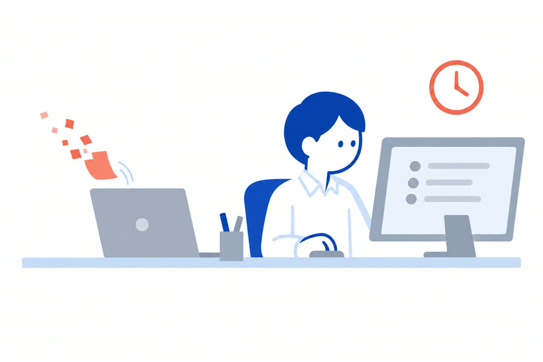
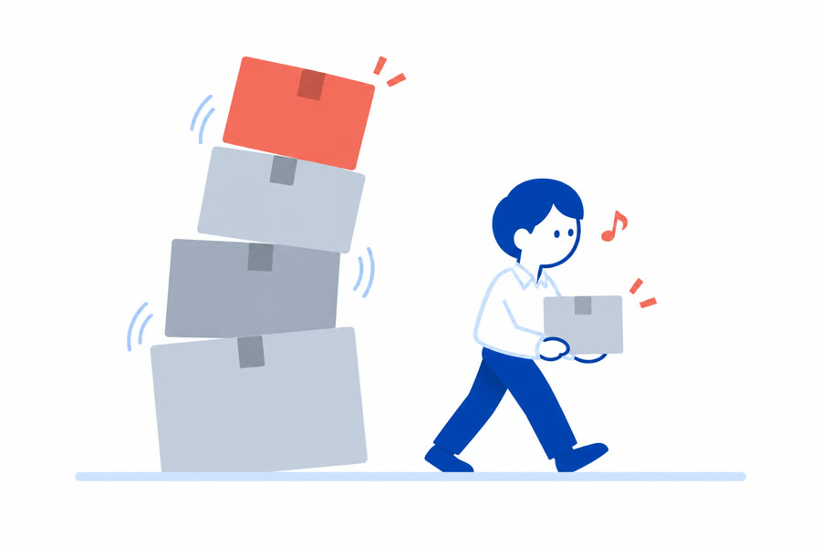
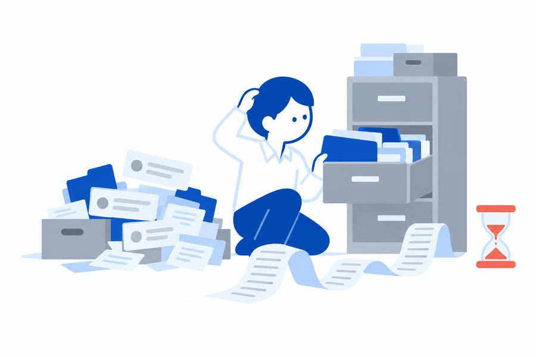
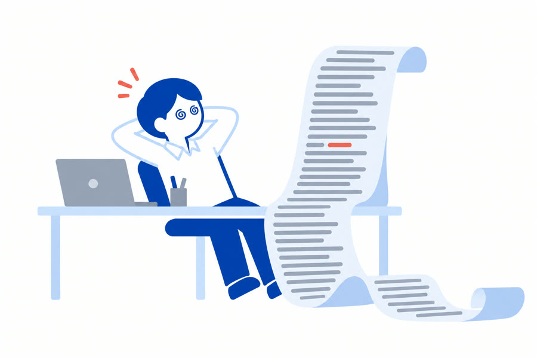
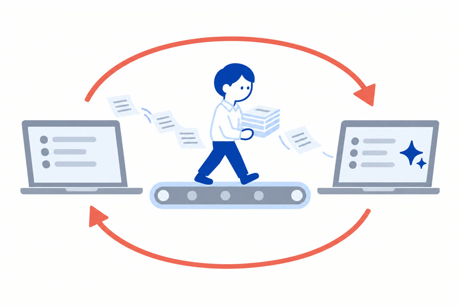
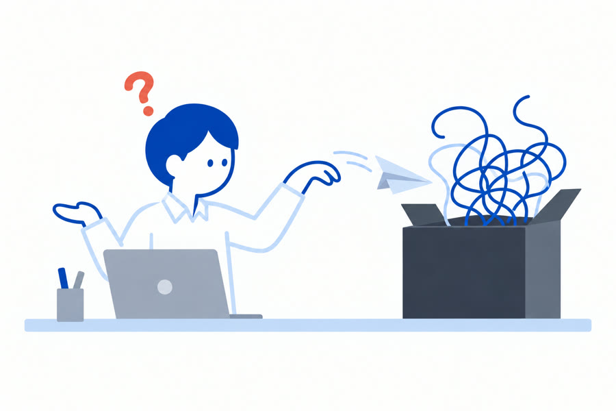
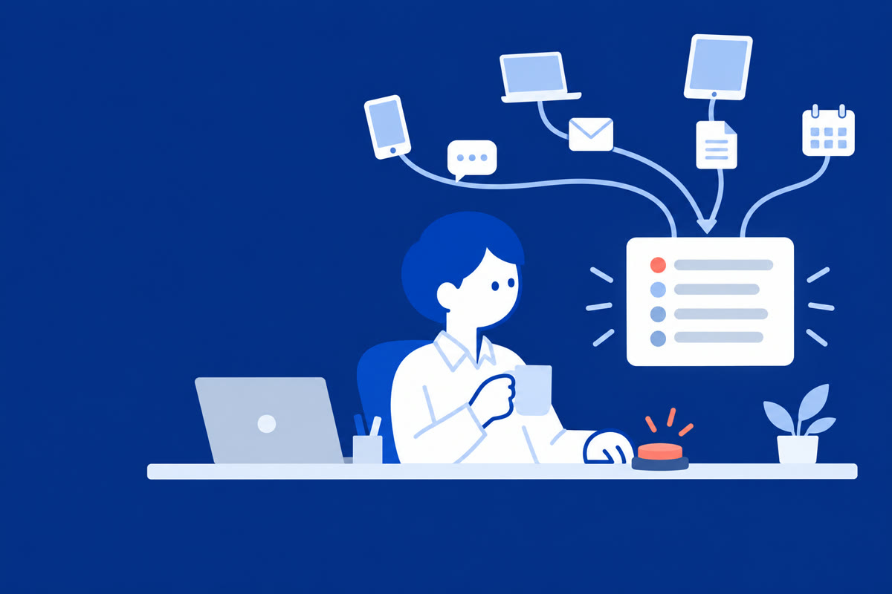

返信の準備はAI。送るのは、私。
LINE・チャットワーク・メールの連絡が1か所に集まり、届いた時点でAIが読んで、要点と返信の下書きを済ませておく「連絡の受信箱」です。必ず「これ欲しかった」と言われるので、「これほし」と名付けました。
一つでも当てはまったら、このページはあなた向けです。

「後でやろう」が、そのまま消える。置いておいたら、忘れていた。気づくのは催促が来てから。
返した瞬間に「やること」と期日が残る。忘れても、受信箱が覚えている
軽いのから片づけて、重いのがたまる。気持ちは楽になるが、重めのタスクは残り続けて、テンションが下がる。
朝いちばんに「今日返すもの」だけが先頭に並ぶ
経緯を調べてから返す。だから遅い。過去のやり取りや資料を確認してから回答するので、返事に時間がかかる。
AIが先に過去の会話と資料を読み、要点と下書きを用意する
AIが作った文章が、読めない。相手がAIで作った文章や資料は長くて濃く、読み解くのに時間がかかる。
要点3行にしてから見せる。判断だけすればいい
AIにコピペする係になっている。連絡のたびに、AIへコピペしてアップロードする役割が増えた。
入口ごとに直接つなぐ。コピペもアップロードもいらない
分からなくなって、えいや。AIの言っていること・やっていることが追えなくなり、確かめずに投げてしまう。
AIがやったことは履歴に残る。送るボタンは、人だけが押す相手もAIで書き、AIで資料を作る。だからラリーは速く、1通は濃く、入口は増え続ける。返す側だけが、人のままです。
ラリーが速い。AIが書くから送る側は疲れない。返せばすぐ次が来て、届く数が増える
1通が濃い。長くて抜けがなくて、読み解くのに時間がかかる。判断の前に「読む」が積み上がる
窓口が多い。相手の数だけ入口があり、入口ごとにAIをつなぐ手間まで増える
全部読んで、判断して、返す。
速さも、濃さも、入口の数も、こちらは変わっていない。
人が全部読んで、判断して、返す。その前提が崩れた。
だから、解決策もAI。ただし、送るのは人。
3つの動作に畳んであります。入ってくる、取りに行く、返すと残る。
届いたものは自動で受信箱に集まり、AIが振り分けて、PDFや画像も読んでおきます。コピペも、アップロードも、要りません。一覧に並ぶのは「まだ返していないものだけ」。
受信箱はAIのブラウザの中で開きます。開いている会話を、AIがそのまま読める。過去のやり取り、届いた資料、頼んだ仕事を踏まえて、「あの資料のあの話」を前提にした下書きが出ます。必要な資料は、AIが置き場まで取りに行きます。
1つのAIに全部を任せません。判定は軽いAI、読み取りと下書きは別のAI、批評はまた別のAI。仕事ごとに使い分けます。
返事を送った瞬間に、「自分のやること」「相手にやってもらうこと」「催促どき」が会話ごとに残ります。相手待ちのものは確認日に戻ってきて、催促の文案までAIが用意する。誰に何をいつまでに、が消えません。
画面のやり取りは、すべて架空のデータです。「APIでつなげられる」入口と置き場は、使っているものを伺ってから、設置のときにつなぎます。
受信箱の骨組みは同じで、つなぐ入口・振り分けの基準・返事の書き方・催促のタイミングを、仕事に合わせて変えます。
入ってくる → AIが読んで下書き → 人が送る → 残る
AIは読んで、下書きまで。送信の道具は持っていません。宛先と全文を見て「送る」を押すのは、人だけです。
送った内容と、次にやることが受信箱に残る
いまはテスト期間です。この期間に入っていただく方は、設定の費用だけで始められます。
使っている連絡手段と、返信・依頼の流れを伺って、つなぎます。
特別な準備は要りません。いつもの連絡手段が使えれば、そのまま始められます。
売り込みはしません。使っている連絡手段と、返信・依頼の流れを伺って、合うかどうかから一緒に考えます。
